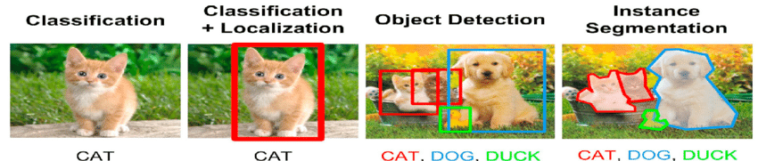
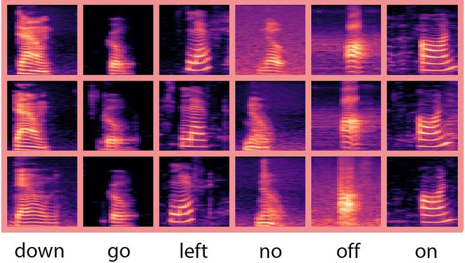
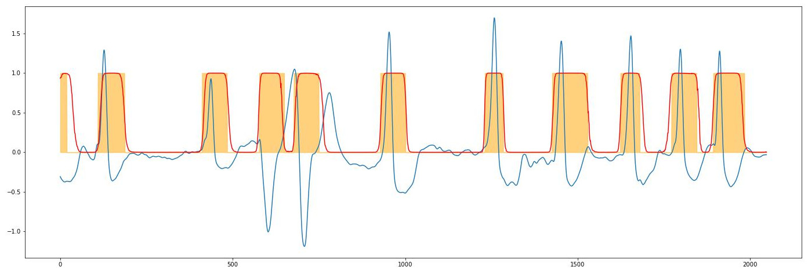

<!DOCTYPE html>
<html lang="en">
  <head>
    <meta charset="utf-8" />
    <meta name="viewport" content="width=device-width, initial-scale=1.0, maximum-scale=1.0, user-scalable=no" />

    <title>Sieci neuronowe - zastosowania i inspiracje</title>
    <link rel="shortcut icon" href="./../favicon.ico" />
    <link rel="stylesheet" href="./../dist/reset.css" />
    <link rel="stylesheet" href="./../dist/reveal.css" />
    <link rel="stylesheet" href="./../dist/theme/beige.css" id="theme" />
    <link rel="stylesheet" href="./../css/highlight/zenburn.css" />

    <link rel="stylesheet" href="./../_assets/custom.css" />

  </head>
  <body>
    <div class="reveal">
      <div class="slides"><section ><section data-markdown><script type="text/template">


## Czym jest sieć neuronowa?

- **biologiczna sieć neuronowa**, układ komórek nerwowych (neuronów) połączonych synapsami
- **sztuczny układ dynamiczny**, będący modelem sieci biologicznej
- **model obliczeniowy** wykorzystywany do uczenia maszynowego
</script></section><section data-markdown><script type="text/template">
## Słowniczek

- sieć neuronowa
- głębokie uczenie (*deep learning*)
- uczenie maszynowe (*machine learning*, ML)
- sztuczna inteligencja (*artificial intelligence*, AI)
- uczenie nadzorowane (SL, *supervised learning*, SL)
- uczenie nienadzorowane (*unsupervised learning*)
- uczenie przez wzmacnianie (*reinforcement learning*, RL)
</script></section><section data-markdown><script type="text/template">
## Zastosowania sieci neuronowych

<div class="cols">
<div>

- klasyfikacja
- detekcja
- segmentacja
- predykcja
- rozpoznawanie wzorców i sekwencji
- modelowanie generatywne
- augmentacja danych
- tłumaczenie maszynowe
- analiza sentymentu
- kompresja
- systemy decyzyjne
- systemy rekomendacji


</div><div>





</div>
</div>
</script></section></section><section ><section data-markdown><script type="text/template">
# Inspiracje biologiczne

## Mózg

<div class="cols">

- średnia masa: $1200-1370$ $g$
- powierzchnia kory mózgowej: $1500-2000$ $cm^3$
- liczba neuronów: $86$ miliardów
- średnia liczba połączeń: $10^3-10^4$
- moc: $20 W$


</div>
</script></section><section data-markdown><script type="text/template">
## Neuron

<div class="cols">

- neurony odbierają potencjały czynnościowe, poprzez połączenia synaptyczne
- jeśli w krótkim czasie napłynie dostateczna ilość pobudzeń, neuron może wysłać potencjał czynnościowy
- wysłanie kolejnego potencjału jest możliwe po upływie czasu refrakcji


</div>
</script></section><section data-markdown><script type="text/template">
## Potencjał czynnościowy

<div class="cols21">

- w stanie spoczynku wnętrze aksonu ma ładunek ujemny względem otoczenia
- zróżnicowanie przepuszczalności jonów potasu i sodu umożliwia odwrócenie polaryzacji błony komórkowej
- w synapsach pod wpływem potencjału zostają uwolnione neuroprzekaźniki, które powodują otwarcie kanałów jonowych w dendrytach
- to umożliwia wnikanie jonów sodu do dendrytów i przewodzenie potencjału czynnościowego


</div>
</script></section><section data-markdown><script type="text/template">
## D. Hubel, T. Wiesel (1959)

<div class="cols">
<div>

- badania kory wzrokowej u kota
- poszczególne neurony pobudzane obszarami pola widzenia
- inspiracja dla sieci konwolucyjnych
  


</div><div>


</div>
</div>
</script></section></section><section ><section data-markdown><script type="text/template">
# Modele neuronu

- model ilościowy: Hodgkin–Huxley
- model jakościowy: FitzHugh–Nagumo, Hindmarsh–Rose
- karykatura: McCulloch–Pitts
</script></section><section data-markdown><script type="text/template">
## Model Hodgkina–Huxleya

<div class="cols">

- konduktancje $g_n$ - sterowane napięciem kanały jonowe ($g_{Na}$ i $g_K$)
- prąd w $i$-tym kanale: $I_{i}={g_{i}}(V_{m}-V_{i})$
- $C_m$ - pojemność błony komórkowej
- $I_p$ - pompa jonowa


</div>
</script></section><section data-markdown><script type="text/template">
## Model McCullocha–Pittsa


</script></section><section data-markdown><script type="text/template">
## Podobieństwa do mózgu

- złożona sieć połączeń
- równoległe przetwarzanie informacji
- szybkość działania
- odporność na uszkodzenia
- odporność na zaburzenia
</script></section></section><section  data-markdown><script type="text/template">
# Źródła

- G. D. Fischbach, *Mind and Brain*, Scientific American, 267, 3 (1992)
- R. A. Kosiński, *Sztuczne sieci neuronowe. Dynamika nieliniowa i chaos*,  WNT 2007
- [Hodgkin–Huxley model (Wikipedia)](https://en.wikipedia.org/wiki/Hodgkin%E2%80%93Huxley_model)
- [FitzHugh–Nagumo model (Wikipedia)](https://en.wikipedia.org/wiki/FitzHugh%E2%80%93Nagumo_model)
- [Hindmarsh–Rose model (Wikipedia)](https://en.wikipedia.org/wiki/Hindmarsh%E2%80%93Rose_model)
- [The humans are dead](https://www.youtube.com/watch?v=2IPAOxrH7Ro)</script></section></div>
    </div>

    <script src="./../dist/reveal.js"></script>

    <script src="./../plugin/markdown/markdown.js"></script>
    <script src="./../plugin/highlight/highlight.js"></script>
    <script src="./../plugin/zoom/zoom.js"></script>
    <script src="./../plugin/notes/notes.js"></script>
    <script src="./../plugin/math/math.js"></script>
    <script>
      function extend() {
        var target = {};
        for (var i = 0; i < arguments.length; i++) {
          var source = arguments[i];
          for (var key in source) {
            if (source.hasOwnProperty(key)) {
              target[key] = source[key];
            }
          }
        }
        return target;
      }

      // default options to init reveal.js
      var defaultOptions = {
        controls: true,
        progress: true,
        history: true,
        center: true,
        transition: 'default', // none/fade/slide/convex/concave/zoom
        plugins: [
          RevealMarkdown,
          RevealHighlight,
          RevealZoom,
          RevealNotes,
          RevealMath
        ]
      };

      // options from URL query string
      var queryOptions = Reveal().getQueryHash() || {};

      var options = extend(defaultOptions, {"controls":true,"width":1920,"height":1080,"theme":"beige"}, queryOptions);
    </script>


    <script>
      Reveal.initialize(options);
    </script>
  </body>
</html>
